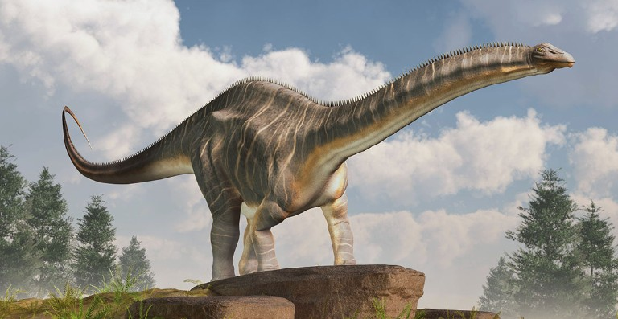
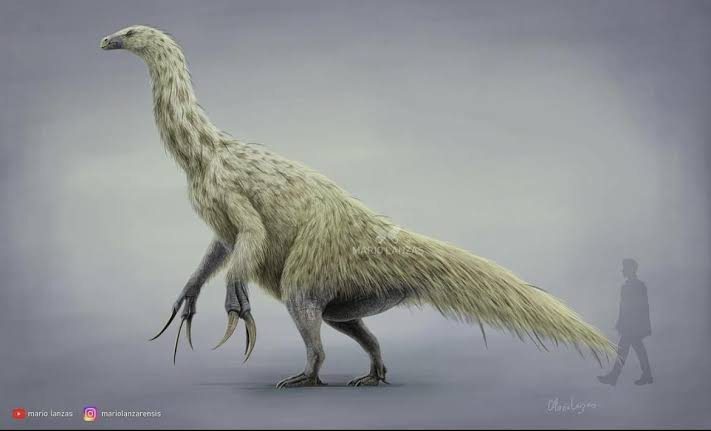
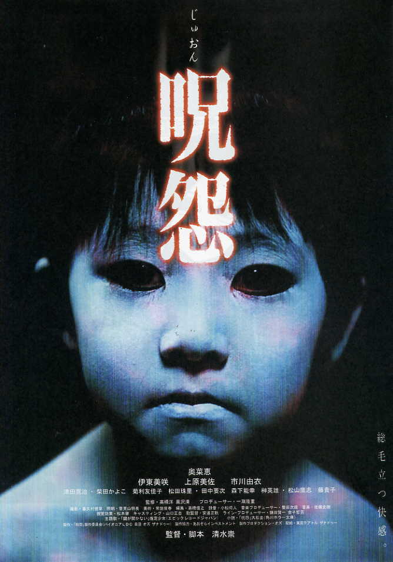
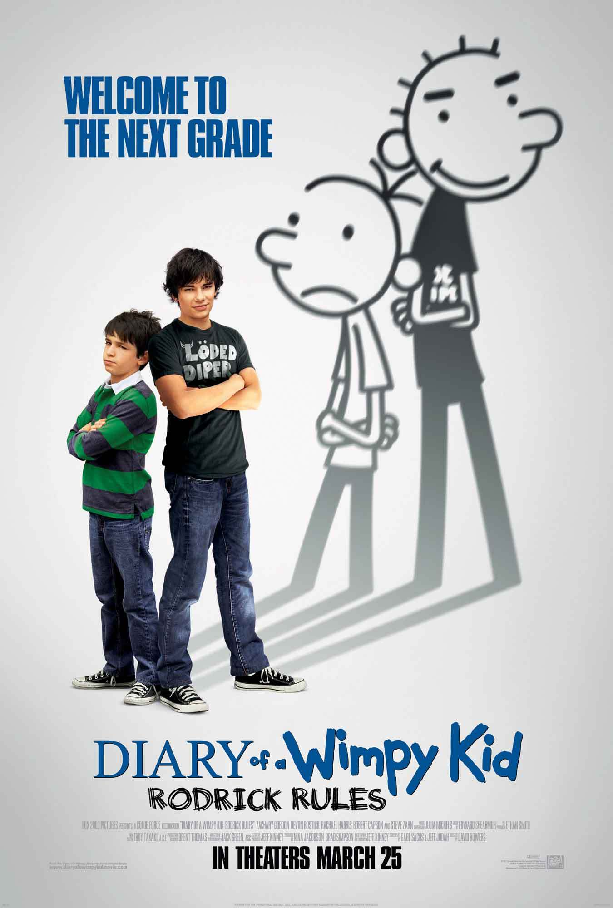
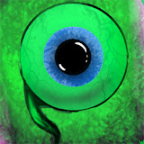
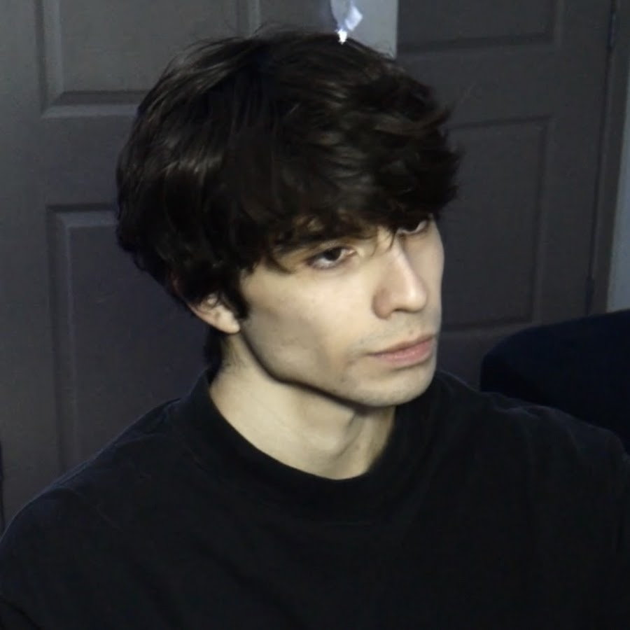

| Picture dinosaur | Dinosaur | Info |
 |
Brontosaurus | Brontosaurus was a giant long-necked herbivorous dinosaur that lived during the Late Jurassic period, around 152–145 million years ago. It could grow up to about 22 meters (72 feet) long and weighed as much as 15 tons. Brontosaurus used its long neck to reach vegetation and traveled on four sturdy legs. Its massive size helped protect it from many predators. |
 |
Therizinosaurus | Therizinosaurus was an unusual dinosaur that lived during the Late Cretaceous period, about 70 million years ago. It is best known for its enormous claws, which could reach over 1 meter (3 feet) in length. Despite its fearsome appearance, Therizinosaurus is believed to have been primarily herbivorous, using its claws to pull branches and vegetation closer for feeding. |
|
Carnotaurus | Carnotaurus was a fast-moving carnivorous dinosaur that lived in South America during the Late Cretaceous period, around 72–69 million years ago. It measured about 7.5–9 meters (25–30 feet) long and is easily recognized by the two horns above its eyes. Carnotaurus had powerful legs built for speed, making it one of the fastest large predators of its time |
| movie | Names | genres | recommend |
 |
Ringu (1998) | horror, thriller | Ringu follows a journalist investigating a mysterious videotape that causes anyone who watches it to die seven days later. As she uncovers the tape's dark origins, she races against time to save herself and her family. I really recommend this movie because the story creates a tense and unsettling atmosphere without relying on excessive gore and features a memorable mystery that keeps viewers engaged. It also had a major influence on modern horror films around the world. |
 |
Iron Lung | Horror, Science Fiction | Iron Lung is a first-person horror game where the player pilots a small submarine through an ocean of blood on a distant moon. With limited visibility and few resources, players must navigate the dark depths while uncovering disturbing secrets. I really recommend this movie because the story delivers intense suspense through isolation and uncertainty. The story also uses simple mechanics to create a uniquely terrifying experience and offers a memorable horror experience in a relatively short playtime. |
 |
The Diary of Wimpy Kid: Rodrick Rules | Humor, Comedy | Diary of a Wimpy Kid: Rodrick Rules follows Greg Heffley as he struggles to get along with his older brother, Rodrick. As the two are forced to spend more time together, they navigate sibling rivalry, embarrassing situations, and family challenges. l recommend this movie because the story because it features relatable family and sibling dynamics that balances humor with heartfelt moments. Rodrick's personality and antics make him one of the series' most entertaining characters. |
| youtubers | the channels | what content | reason | links |
 |
Jacksepticeye | Jacksepticeye is one of the first gaming youtuber who uploads in the early era of YouTube. The gaming content of Jacksepticeye evolves through out the years. In the early years, he played games Far Cry 3 and Dark Souls which in duartion of five minutes to fourteen minute max. During his peak years, he involve himself in popular games like Five Nights at Freddy's and Happy Wheels which what his known for during at that time. In recent years, Jacksepticeye shift into more longer duration games like Subnautica 2 and random scary games from Itch.io and Steam. He also stop uploading regularly from his peak years to focus more on his personal life. | The reason why I'm watching his videos is because he always acts like a father figure to his viewers and spoken his words wisely using his knowledge. | Jacksepticeye |
| The Game Theorists | Game theory at first is a channel of young Matthew Patrick or known as MatPat documented his theather performance in his university years as he majors in Theather and Psychology. A year after that, he start uplaoding his first Game Theory video titled 'Game Theory Promo' to promote learning science, physics and math, making theories about the game in his wooden wardrobe, making his iconic sign off very recognisable in the community. His focus at that time is the American Childhood game such as Sonic The Hedgehog, Super Mario's and Mortal Kombat. The Game Theory spark its popularity on his video about The character Mother in the game of Earthbound which was recieved as impossible and out of box theory but well recieved. As his popularity grows, Matpat becoming well known for his out of the box theory on the famous game of Five Nights at Freddy's franchise for over a decade. Matpat also got his cameo in Five Nights at Freddy's movie as a waiter, spitting his iconic sign off. In the year 2024, Matpat finally retired from the channel in order to focus on his family and personal life. The channel is now inherited by Tom, one of his behind the scene theorists. | The reason why I'm watching his videos is because he helps me learn science, physics and math in much more fun way with my favorite game. It also helps me to think outside of the box in certain things which helps me in crirtical thinking. | The Game Theorists | |
 |
shooshiMooshi | shooshiMooshi first uploaded his content six years ago reacting to his favorite music genre, vocaloid from his stream on twitch. He often reacted and analizes the music video and pinpoint the hidden meaning that often covered in japanese vocaloid. His content slowly shift from reacting and analizing vocaloid to reacting to short disturbing youtube videos that often depicting sexual assault and abuse. His top three popular videos being reacting to short film slowly gaining attraction from the Youtube community in order to spreading awareness on this subject matter. By the year 2024, his content slowly shift from short films to crime documentary on several Youtube channel which remains until now. | The reason why I'm watching his video is because it gets me acknowledge on abuses that some people commits. | shooshiMooshi |